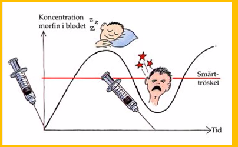
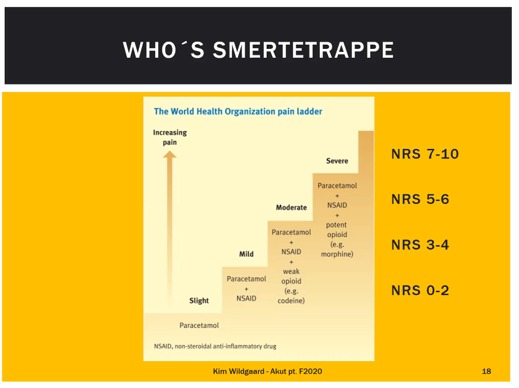
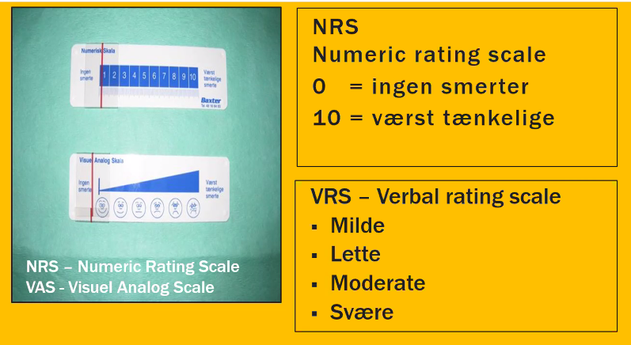
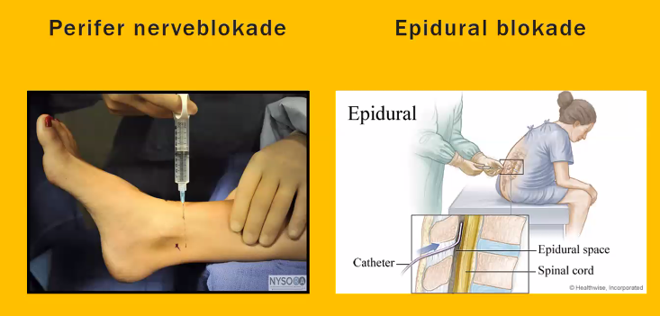
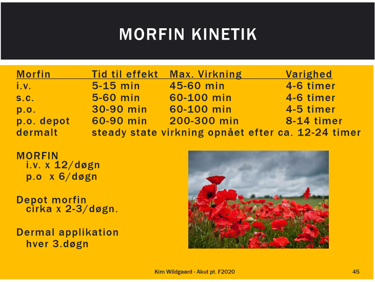
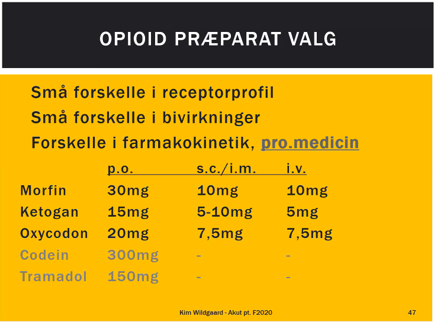
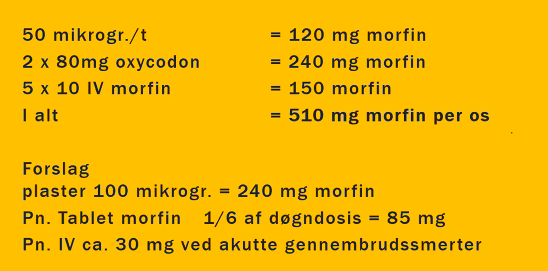

Akutte smerter
Velkommen til the painkiller
- I er næsten læger, men ved ikke så meget om smerter
- Det er nemt at ignorere smerte, især patienternes.
- 80% af al henvendelse til sundhedsvæsen handler om smerter
Læringsmål
- Viden
- Du skal efter undervisningen have grundlæggende viden om
- smertetyper, smertediagnostik og kvantificering, Visual Analog Scale, det nociceptive system, vicerale og somatiske smertetilstande
- dosering af perifert og centralt virkende analgetika og titrering med opioider
- have kendskab til
- sekundære analgetika
- regional analgesi
- komplikationer til og bivirkninger ved smertebehandling
Definition af smerte
- Definition of pain
- An unpleasant sensory and emotional experience associated with actual or potential tissue damage, or described in terms of such damage.
- Det er svært med hvad er smerter
- Smerter er subjektive og kun tilgængelige for den der føler smerten
POLL
- Hvilken af følgende har betydning for af smerter"
* Traumets/sygdommens karakter
* Køn
- ikke rigtig..
- Vægt/BMI
- ja i doseringen
- Forventninger
- ja, hvis de forventer smertefrihed
- Psykosocialt stress
- ja, det kender I.
- Environment
- Hvor er vi henne.
- Kroniske smerter
- Jeg har smerter hverdag, så det er ikke så slemt ved OP
- og så er nogle ekstra snesitive
- så det er lidt i begge retninger.
Akutte smerter
Akutte smerter kan være udløst af akut sygdom/traume Akutte smerter kan være postoperative. Akutte smerter kan være en ændring i en kronisk smertetilstand
Poll: Hvorfor er smerte et problem
Akutte smerter er fortsat et problem - hvorfor? (Multiple Choice)
- Angst for overdosering
- Angst for (potentielt) farlige bivirkninger
- Kende dem, og kunne håndtere dem
- Økonomi
- Begrænset problem, opiodier er relativt billige.
- Standardiserede smerteregimer
- Vi holder op med at tænke os om - dem der ikke passer ind får ikke så god behandlgin?
- vi tænker os ikke om.
- Manglende viden/interesse fra lægens side "Det går nok over”
- Ja, det fylder ikke så meget i currikulum.
- Angst for udvikling af misbrug
- Personalet misbruger opioiderne
- Det er ikke et problem, siger lægen.
Post-operative smerter
- Hvorfor
- Hvorfor?
- Ingen smerter — bedre livskvalitet
- Hurtigere mobilisering
- Modvirker reduktion af lungefunktion
- Modvirker kardielt stress
- Hurtigere fødeindtag
- Hurtigere udskrivning
Overvejelser når man ordinrer analgetika
- Allergier/tidligere bivirkninger til analgetika
- Kontraindikationer
- Alder
- Vægt
- Hvilken type smerte har patienten
- Får patienten analgetika i forvejen?
- Tilvænning/misbrug?
- Nyre/leverfunktion
- Biotilgængelighed af analgetikum - administrationsvej?
Der var uddybninger af emnerne som jeg ikke lige fik med 19-06-2020 10:28 19-06-2020 10:26 - space out. -19-06-2020 10:27
Hovedprincipper for ordination analgetika til
Døgndækkende Mulighed for p.n.
Tænk på bivirkninger (evt. profylaktisk behandling)
Multimodal

Multimodal analgesi
En kombination af analgetika med forskellige virkningsmekanismer — additive og/eller synergistiske virkninger.
Altså: Forbedret analgetisk virkning med lavere doser og dermed færre bivirkninger
Eks.:
Paracetamol + NSAID + morfin til behandling af postoperative smerter efter hoftealloplastik
WHO smertetrappe

Hvilke komponenter indgår i en smerteanamnese - hvad skal man spørge om?
- Hvor
- lokalisation?
- Hvornår
- Hvornår begyndte smerten ?
- Relation til hændelse?
- Udvikling
- Hvordan har smerten udviklet sig?
- Beskrivelse
- Murrende, trykkende, brændende etc…
- Det er meget fint, men har patienten den samme opfattelse?
- Her skal I hjælpe pt.
- Intensitet
- Forskellige skala, VAS NRS VRS FLACC..
Smerte scoring

VAS = god til dårligt sprog? NRS mere kognitivt vanskelig. * VRS = verbal rating scale. * Wong-Baker = smileys. god til børn og demente. * Ikke god til absolutmåling, men god til ændringer i smerter.
to typer af smerter
- Nociceptive (skade— aktivering af nociceptorer)
- Kan beskrives som skarpe, dumpe, trykkende, borende
- Somatiske (eks. sårsmerter)
- Viscerale (eks. koliksmerter)
- Behandles typisk med PCM/NSAID og opioider
- Neuropatiske (beskadigelse af nervestrukturer)
- Kan beskrives som jagende, brændende, sviende, stikkende, evt. berøringsudløste
- Efter kirurgisk/traumatisk overskæring af nerver
- Diabetisk neuropati
- Behandles ofte med antidepressiva/antikonvulsiva
Værktøjerne
- Paracetamol
- NSAID
- (Svage opioider)
- Gå direkte til de stærke...
- Stærke opioider
Specialist

Akutte smerte - de første 5 min
- Behandling af akutte smerter kræver IKKE altid en detaljeret ABCDE gennemgang
- Hører hjemme under 'E' men kan være medvirkende årsag til abcd problemet
- Kan påvirke det kliniske billede og de vitale parametre
- Indenfor de første 5 minutter
- Vurder smerten
- Klargør/indgiv den første smertestillende behandling
- Eks: Ankomst af skrigende patient — injektion af morfin 5-10 mg i.v
- Den almindelige patient kan klare 5-10 mg morfin
- obs 45 kg 75 år kvinde, de får lidt mindre..
de første 30 min
- Mål for smertebehandlingen
- Fastsættes individuelt
- (Smertefri)/reducere smerte
- Lov ikke pt at de bliver smertefri.
- Behandlingsstrategi
- Analgesi-induktion
- at opnå et acceptabelt smerteniveau hurtigst muligt
- Analgesi-vedligeholdelse
- (Efter opnåelse af et acceptabelt smerteniveau - relevant smertebehandlingsplan)
- Analgesi-induktion
Behandlingsmål
- NRS score <= 3 i hvile
- NRS score <= 5 ved aktivitet
- Acceptabelt niveau af evt. bivirkninger
Cases x 4 - 10 min
Case 1
- 23-årig i øvrigt rask mand, har gennemgået laparoskopisk operation for appendicit.
- Forslag til postoperativ smertebehandling
- 1g PCM x 4
- 400mg ibuprofen x 3
- 400-600 mg afhængig af vægt og størrelse
- Morfin 5-10 mg pn.
- De har det tit okay efter lapskopi.
- Laksantia..
Case 2
- 63-årig mand henvender sig i akut modtagelsen med kraftige smerter i ryggen. CT viser nyresten.
- Forslag til smertebehandling?
- Diclon? supp.
- 100 mg x max 2 (man vil nødig give mere end 200 mg i døgnet)
- skulle have dilaterende effekt.
- Morfin?
- Nogle steder meget restriktive på morfin fordi det giver nogle spasmer?
- Diclon? supp.
Case 3
- 30-årig mand taklet under fodboldkamp, nu kraftig hævelse + misfarvning over malleol-området. Rtg viser ingen fraktur.
- Smertebehandling?
- RICE(M)
- rest, ice, compression, elevation, mobilisering
- 1g x 4 PCM
- 400mg x 3 NSAID.
- RICE(M)
Case 4
- 4-årig pige. Ondt i ørerne 4 timer, temp 38,8. løvrigt rask.
- Tiltagende smerter. Græder hele tiden. Kommer i lægepraksis behandling.
- Forslag til smertebehandling?
- PCM efter vægt, flydende eller supp.
- Børn < 12 år. 50 mg/kg legemsvægt/døgn fordelt på 3-4 doser. Doseringsinterval: Mindst 6 timer.
Paracetamol
- Ugiftigt (bob, bob, hvis man bruger det i terapeutisk dosis)
- Billigt
- Antipyretisk
- Maskering af feber?
- Begrænset virkning
- Kan indgives som tablet, i.v.,mixtur suppositorie, osv.
- OBS: Patienter med stærkt nedsat leverfunktion
NSAID.
Lidt ”stærkere” end panodil Anti-inflammatorisk Anti-pyretisk Ufarligt ved kortere tids brug Kan indgives som tablet, mixtur, i.v., suppositorie
Bivirkninger
Mange bivirkninger: * Ventrikel irritation - uafhængig af indgiftsmåde * Ulcerogent * CAVE tidl. Ulcus ventriculi * Nyreskade * CAVE kronisk nyresygdom * Thrombocyt aggregationshæmning * CAVE thrombocytopeni, øget blødningstendens * Vand og Na+ retention * CAVE svær hjerteinsufficiens
Svage opioider
- Ikke plads i akutte smerter
Case 5 -
- 70 årig mand, netop opereret for kompliceret colon-ileus. Ligger med sonde til sug. Nu kraftige postoperative smerter.
- Forslag til smertebehandling?
- Akut håndtering?
- Må man give morfin til ileus?
- Depot/plaster?
- 10 mg morfin iv *
- Hvad er udfordringerne?
- Kan ikke gives pr os.
- IV morfin brændes hurtigere af
- max 2-4 timer, så skal de have fastbehandling x 8-12
- så andre mulgheder.
- Er der noget underliggende som skal fixes?
- Plan?
- epidural? *
- Facit
- Akut smertebehandling
- Morfin 5-10 mg iv. Gentages hver 5-10 min indtil acceptable smerter
- Plan
- Oral/i.v /andet?
- Supp. Paracetamol 1g x 4 +
- Fast iv morfin 5-10 mg x 12 + pn morfin 5 mg i.v max x 8
- IV pamol / toradol?
- Epidural analgesi? Plaster? Subcutan adm.?
- Plaster tager lidt tid, så ikke akut.
- Subcutan skal ikke undervurederes. Det er nemt at lave.
- Akut smertebehandling
Opioider
- Virkningsmekanisme
- Binder sig til opioid receptorer — Analgesi, diverse opioid bivirkninger
- Svage opioider:
- Kodein, tramadol
- Stærke opioider:
- Morfin, oxycodon, ketogan, fentanyl, metadon, petidin
- Ketogan: det vil de alle have - man ska være lidt mistænk som.
- Kraftig virkning
- Virkningen kan titreres
- Kan indgives
- p.o., i.v., i.m., suppositorie, dermalt, sublingualt (spray, smeltetablet), trans-buccalt (slikkepind), nasalt (spray)
- Hurtig lindring
- Antidot
Bivirkninger
- Obstipation
- Kvalme
- Opkastning
- Hudkløe
- Respirations-depression
- Svimmelhed
- Hallucinationer
- Misbrugspotentiale
Misbrugspotentiale
- Næppe ved kortvarige akutte smerter
- Undtagen ved eksisterende misbrug
- obs at de kan genopdage misbrug.
- Tilvænning
- Efter kun ugers brug - kræver langsom aftrapning ved ophør
- "takyfylaksi"
POLL PLASTER
- Du sætter et fentanylplaster på din patient som har fået store mængde morfin det seneste døgn.
- Hvor længe skal du regne med der går før plaster behandlingen virker optimalt


- To forskellige naloxon
Narcanti
Narcanti (Naloxon) ophæver såvel virkning som bivirkninger.
Dosis 0,02-0,04 mg i refrakte doser i.v. (i.m.). 0,4-0,8 mg ved hyperakutte situationer).
OBS Virkningsvarighed af enkeltdosis er 1(-4) timer, dvs. kan være kortere end opioidernes virkningsvarighed
Case 6
- 70-årig mand der for nogle uger siden havde pludseligt indsættende udslæt i den ene side af panden med små blærer og sårskorper ledsaget af en brændende fornemmelse. Udslættet er nu forsvundet. Nu fået voldsomme anfald med jagende smerter i området, kan slet ikke tåle nogen rører ham i panden.
- Diagnose og behandling?
- Herpes zoster
- Aciclovir?
- Gabapentin?
- Herpes zoster
- Et klassisk eksempel på neuropatisk smerte.
- Er en følge af den akutte neurit der optrådte ved herpes zoster udbruddet
- Behandling med f.eks
- Gabapentin - Optitrering til f.eks 300 mgx 3
- Tricykliske antidepressiva
- Bivirkninger obs gangbesvær
- Ikke noget der tager alle smerter.
Case 7
- 28 årig mand, rask, indlagt med diffuse kraftige mavesmerter. Kvalme, kaster op.
- Akut smertebehandling?
- IV-morfin
- kvalmestillende?
- Postoperativ smertebehandling
-
Perforeret appendicit
- plus fast morfin efterfølgende
Akut smertebehandling:
- Morfin 5-10 mg iv. Gentages hver 10-15 min indtil acceptable smerter
- Plan:
- Oral/i.v ?
- Paracetamol 18 x 4 + T. ibumetin 400 mg x 3 + T. Morfin 10 mg x 4. + pn morfin 7,5 mg iv max x 6
Case 8
58 årig kvinde, dissemineret C.Mammae til bl.a knoglerne. Nu patologisk femurfraktur. Fast behandling med bl.a. T.Contalgin 100mg x 3.
Akut smertebehandling ved ankomst til sygehus? Post operativ smertebehandling, inkl. p.n. doser? Specielle udfordringer hos denne patient?
Evt alternativer til p.0. behandling?
- AKut
- morfin 15 mg iv gentages hver 10-15 min indtil acceptable smerter
- Tommelfinger til pn: 1/6-del af døgndosis
- IV-dosis : 1/3-del af oraldosis = IV-dosis.
- Plan:
- Oral/iv?
- Paracetamol 1g x 4 + T. ibumetin 400 mg x 3 + pn. T. Morfin 50 mg
- max x 4. + pn morfin 15 mg i.v max x 6.
- Alternativ: epidural / perifert blok
Case 9
Klokken er 23.55 - du tilkaldes af den nyligt fremmødte natsygeplejerske
56-årig mand med dissemineret lunge cancer. Tiltagende smerter.
Sygeplejersken fortæller pt. har fået 3 x 10 mg iv morfin pn på 30 min uden effekt. Du tilkaldes for at løse problemet.
Seneste døgn fået 2 x 80mg oxycodon Har desuden plaster matrifen 5Omikrogram/t Samt fået iv pn (inklusiv seneste, i alt 50 mg)
POINTS
- 10 mg er for lidt til ham?
- Han får meget i forvejen

- Denne behandling er svær i sengeafsnit fordi sgpl ikke tør giev 85 mg morfin i pillebæger.
- I SKAL STÅ VED SIDEN AF SENGE OG SIGE
- GIV 85 mg morfin
- KOM SÅ, GØR DET!!!
- I SKAL STÅ VED SIDEN AF SENGE OG SIGE
TAKE HOME
- Lav en smerteanamnese
- Smertebehandling - 5min/30min/24hrs
- Husk når du ordinerer analgetika
- Multimodal smertebehandling om muligt
- Døgndækkende behandling
- Sørg for der er nok p.n. doser
- PN betyder ikke at pt ikke må få mere, men at man bare vil have lægekontakt ved mere.
- Individuel dosering
- Kend bivirkningerne og tal med sygeplejersken!
- VIGTIGSTE:
- LÆG EN PLAN!
- FØLG OP PÅ DIN PLAN!